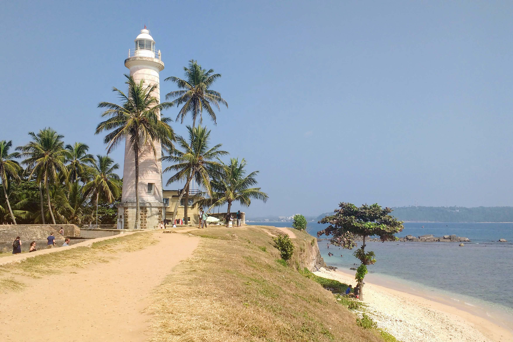
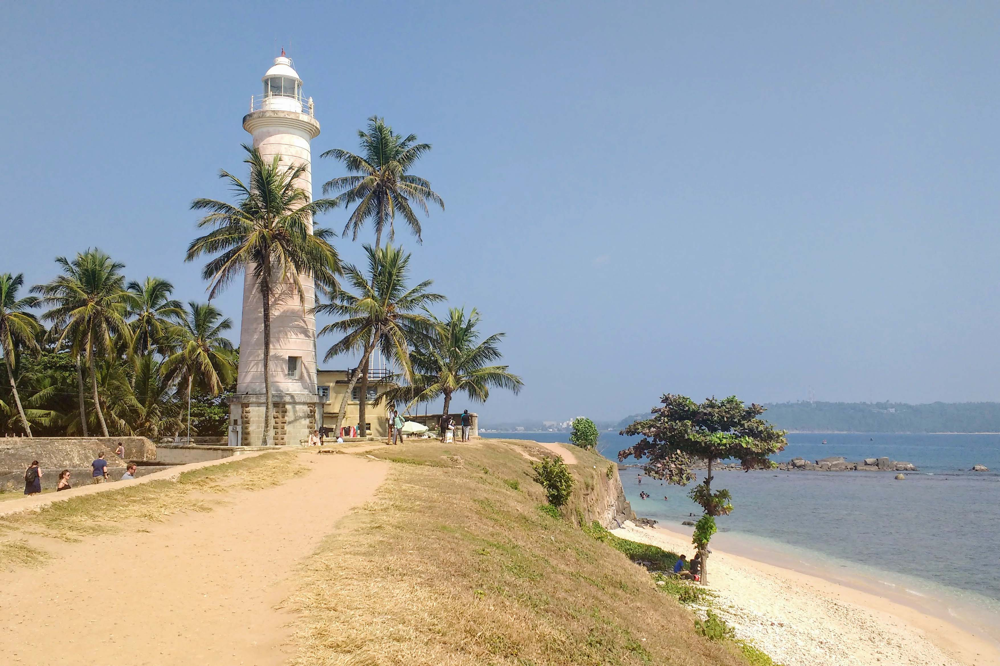

Here we go to Pinnawala in the morning on the first day, then visit Dambulla cave temple and spend the night in cinnamon loge habarana hotel. On the second day, go to sigiriya and come to earl's regon hotel in kandy for that night. The next day we will go to Kandy temple and come to cinnamon bay galle to spend that night. On the fourth day i.e. the last day, Galle Fort will be visited and then a Colombo city tour will be done and the tour will be completed that night.